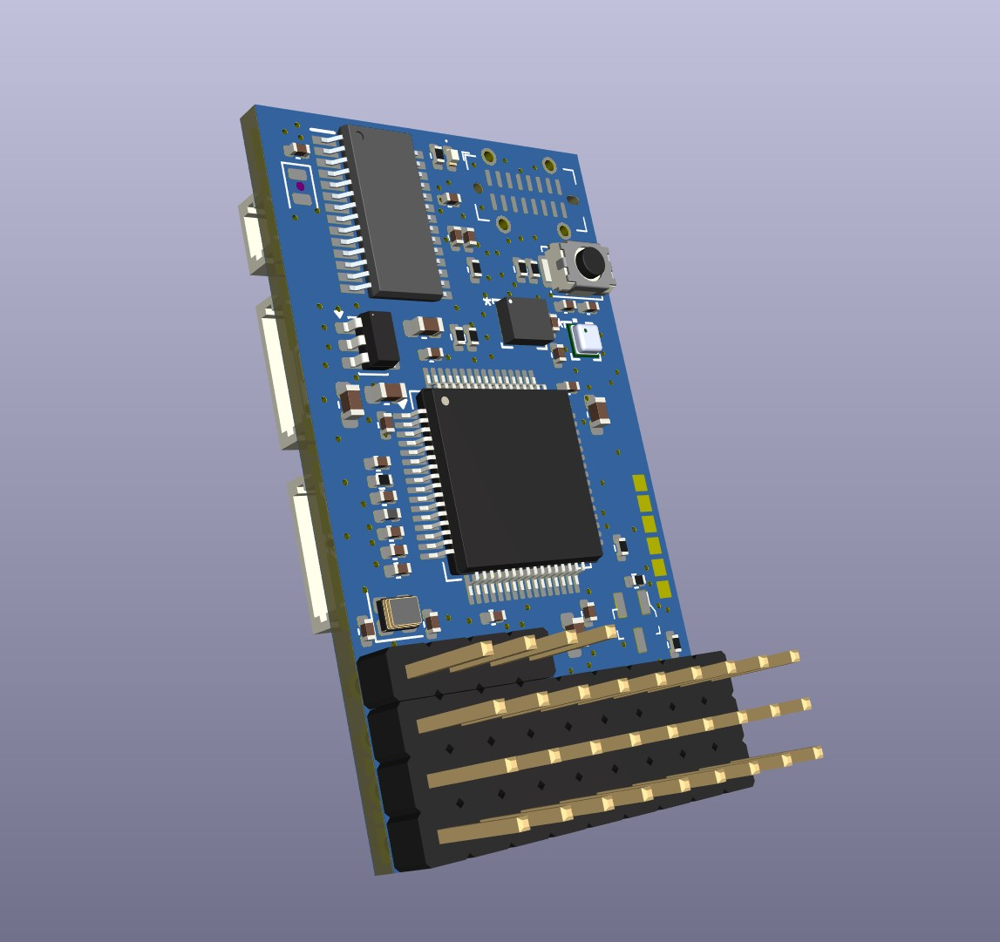
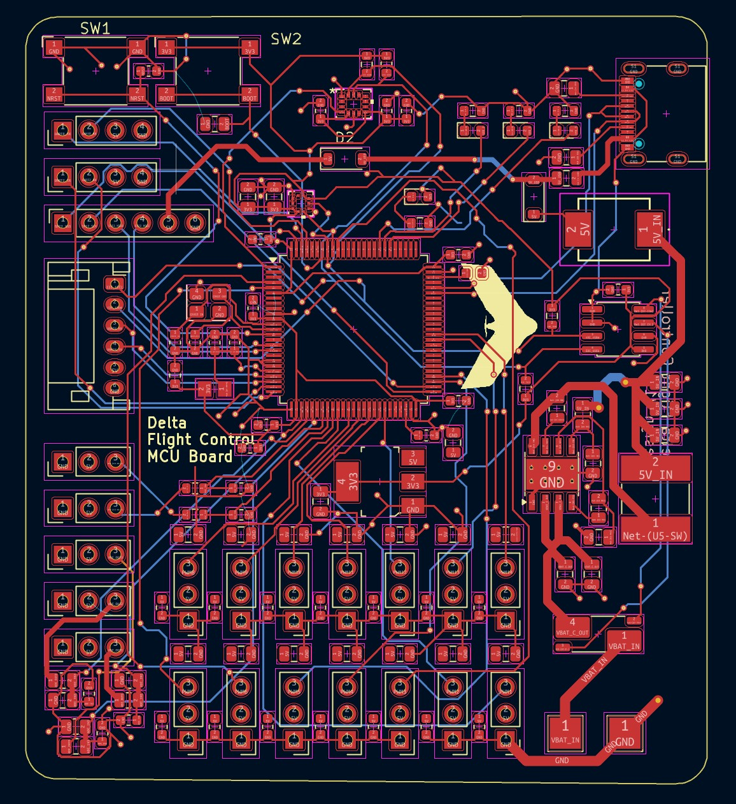
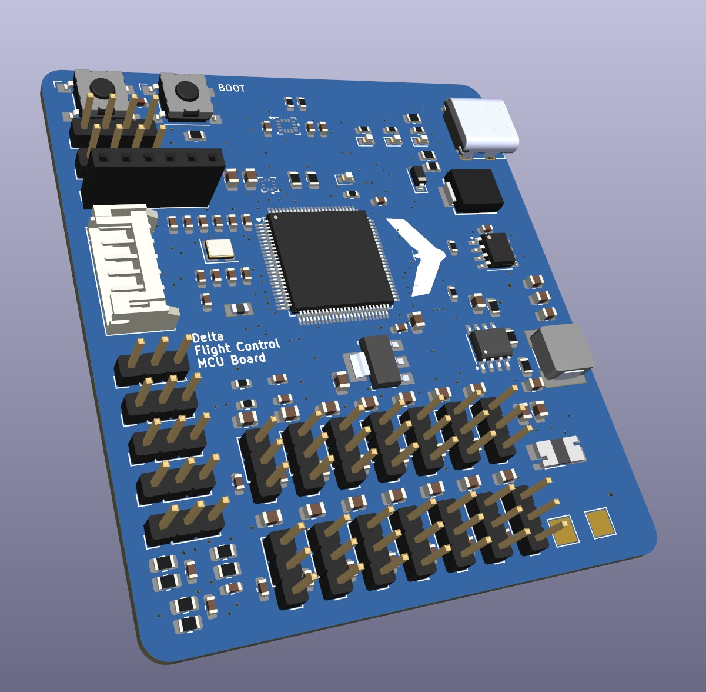

Projects
A second iteration of my version one flight controller, this STM32F405 flight controller attempted to achieve the goal of minimizing footprint as much as possible for small airframes/fuselages and to pack as many peripherals into that space. This version was upgraded in various ways, including a different IMU, an analog video on-screen-display chip for data on video feeds, digital video transmission ports, and new JST connectors. The board utilizes UART, I2C, SPI, and various PWM ports for motors/actuators with the flight controller switched to the lower cost F405 series from STM electronics, as lowering cost was another main aim for this revision.
Tools & Skills: PCB Design, 4-Layer, UART/I2C/SPI communication, KiCAD, STM32 Microcontroller, small footprint

This flight controller was my first version, designed to be a capable autonomous aircraft flight controller with necessary sensors/components, able to handle a large variety of PWM ports, and have a wide range of capabilities for different ports and sensors. The microcontroller used is a STM32H743 and the board includes a port for an ELRS reciever, GPS, 14 PWM, analog sensors and voltage measurement, and a SPI interface port. The board is designed mainly for fixed-wing aircraft, and specifically a VTOL aircraft which is why there are so many PWM pins, but the board can be used with quadcopters too. I also included a USB port on the flight controller to be able to load software onto the microcontroller such as Ardupilot. I tried to keep the board size relatively small, and size comes in around a 70mmx70mm square.
Tools & Skills: PCB Design, KiCAD, STM32 Microcontroller
Links: Flight Controller GitHub

